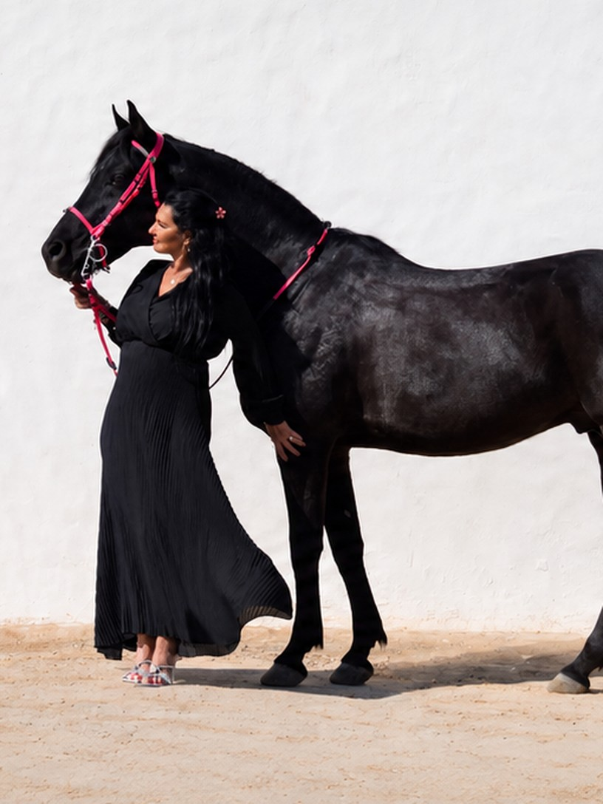

Deine persönliche Lebensbegleiterin für jede Situation.
01 Über mich
Seit über vierzig Jahren arbeite ich mit Menschen – im Coiffeursalon, in meinem eigenen Geschäft, in unzähligen persönlichen Gesprächen und Einzelbehandlungen. In all diesen Jahren durfte ich nicht nur Haare berühren, sondern vor allem Herzen. Ich habe zugehört, begleitet, gestützt, verstanden. Und ich habe gelernt, wie viel Kraft entsteht, wenn ein Mensch wirklich gesehen wird.
Mit der Zeit wurde mir bewusst, dass meine wahre Stärke weit über das Handwerk hinausgeht: Ich habe die Gabe, Menschen zu lesen, ihre Stimmungen zu spüren, ihre unausgesprochenen Sorgen zu erkennen und ihnen Halt zu geben. Dieses tiefe Verständnis möchte ich nun bewusst einsetzen – als Lebensbegleiterin.
02 Meine Begleitung
Ängste, Blockaden, Unsicherheiten oder einfach das Gefühl, festzustecken. In solchen Momenten braucht es jemanden, der zuhört, ohne zu urteilen. Jemanden, der versteht. Jemanden, der Energie gibt, wenn die eigene fehlt.
Ich begleite Sie
Meine Arbeit basiert auf Empathie, Intuition und der tiefen Überzeugung, dass jeder Mensch die Lösung bereits in sich trägt – manchmal braucht es nur jemanden, der hilft, sie wieder sichtbar zu machen.

Ich biete Ihnen einen geschützten Rahmen,
in dem Sie sich öffnen dürfen.Einen Ort, an dem Sie verstanden werden.
Einen Moment, der nur Ihnen gehört.
03 Kontakt
Wenn Sie sich angesprochen fühlen und den Wunsch haben, mit mir gemeinsam einen neuen Weg zu gehen, freue ich mich über Ihre Nachricht – schreiben Sie mir einfach über WhatsApp oder rufen Sie mich an unter +41 79 000 00 00.
In einem persönlichen Kennenlerngespräch – telefonisch oder vor Ort, je nachdem, was für Ihre Situation stimmiger ist – lernen wir uns kennen und besprechen, welches Anliegen Sie mitbringen, welche Schritte sinnvoll sind und welcher Rahmen dafür passend erscheint.
Orientierungsgespräch, einmaligCHF 50.–
Max. 1 Stunde. Die weiteren Kosten richten sich nach Ihrem individuellen Thema und dem geschätzten Aufwand; diese besprechen wir gemeinsam transparent und in Ruhe.
Ich freue mich auf Ihre Nachricht – und darauf, Sie zu unterstützen, wenn Sie sich in einem Tief befinden, neue Kraft brauchen oder jemanden suchen, der zuhört und versteht.
Schreiben Sie mir
Ein kurzer Satz genügt. Ich lese jede Nachricht selbst und melde mich zurück.
Nachricht sendenÖffnet WhatsApp. Lieber telefonieren? +41 79 000 00 00